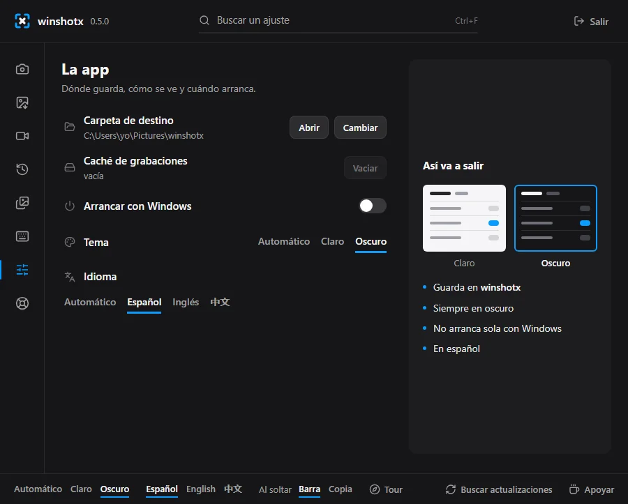

Privacidad
winshotx no recoge nada: ni cuentas, ni telemetría, ni analítica, ni informes de fallos. Lo que capturas se queda en tu ordenador. Aquí está exactamente a qué se conecta la aplicación y para qué, para que no tengas que fiarte de nuestra palabra.
Lo que se queda en tu ordenador
Cada captura, cada grabación, cada fotograma del editor y cada ajuste se escriben en tu propio disco. Nada se sube a ninguna parte.
- Las capturas y los vídeos van a la carpeta que elijas en Ajustes, y la pestaña Historial los enseña desde ahí.
- Una grabación que estás editando vive en una carpeta temporal y se borra al descartarla. Ajustes enseña cuánto ocupa esa caché y la vacía con un botón.
- Si enciendes grabar siempre lo último, guarda en tu disco los últimos 15, 30 o 60 segundos de la pantalla y va tirando lo viejo. Nunca sale de tu ordenador.
Las únicas conexiones que hace
Dos, y las dos se ven:
- Buscar actualizaciones. La versión instalada desde esta web o con winget le pregunta a
github.comsi hay una versión nueva. Esa petición no lleva más que tu dirección IP, que la lleva cualquier petición web. La de la Microsoft Store ni eso: la actualiza la Store. - Abrir un enlace que has pulsado. La aplicación puede abrir cuatro direcciones en tu navegador, y solo cuando pulsas su botón: esta web, el repositorio de GitHub, la página para contar un fallo y Buy Me a Coffee. Ninguna más.
Lo que Windows le deja hacer, y para qué
- Leer la pantalla. Es una herramienta de captura: sin esto no hay producto. La imagen va al archivo o al portapapeles, nunca a otro sitio.
- Escuchar sus atajos de teclado, para que funcionen mientras estás en otro programa. Vigila sus propias combinaciones y deja pasar todo lo demás: no apunta lo que escribes.
- Grabar el sonido del PC, tu micrófono y tu cámara, solo mientras hay una grabación en marcha y solo lo que hayas encendido.
- Arrancar con Windows, solo si lo enciendes tú. Se apaga desde Ajustes, y también desde el Administrador de tareas.
Si conectas un agente de IA (Claude Code, Codex, Cursor), habla con winshotx dentro de tu ordenador, sin pasar por internet. Una grabación que empieza él se ve igual que una tuya, con el marco rojo y la barra.
Esta web
Sin analítica, sin cookies, sin rastreadores, sin tipografías de terceros y sin vídeos incrustados: no se carga nada de otro dominio. El alojamiento guarda los registros normales que guarda cualquier servidor.
Menores
winshotx no está dirigida a menores y no recoge datos de nadie, tenga la edad que tenga.
Cómo comprobar todo esto
El código es público, con licencia MIT, en github.com/Mun1to/winshotx. La lista de direcciones que la aplicación puede abrir es un archivo aparte, src-tauri/src/enlaces.rs, y hay una prueba que falla si deja de coincidir con la interfaz.
Cambios y contacto
Si algo de esto cambia alguna vez, cambia aquí primero, con la fecha. Lo que quieras preguntar, a las incidencias del repositorio.
Última actualización: 14 de noviembre de 2026.
